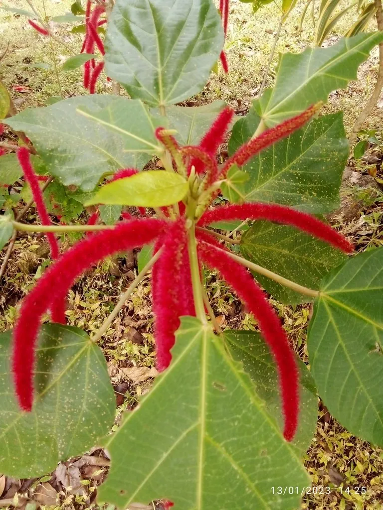

灌木与花木 · 植物界
狗尾红 Acalypha hispida

大戟科铁苋菜属常绿灌木，雌花序呈鲜红色长穗、密被毛，形似狗尾，是热带庭园中常见的观花植物。
- 分类
- 门被子植物门纲木兰纲目大戟目科大戟科属铁苋菜属
- 栖息环境
- 热带雨林边缘与河谷，喜高温高湿、阳光充足
- 地理分布
- 原产新几内亚、马来群岛；中国华南、云南南部及世界热带地区栽培
- 保护级别
- IUCN 暂无评估；栽培广泛，野生种群未受明显威胁
物种志
狗尾红为常绿灌木，高 1–3 米，分枝多，茎绿色或淡褐色。叶片宽卵形至卵状披针形，长 10–20 厘米，边缘具粗齿，叶柄长。花单性同株，雌花序生于叶腋，呈圆柱状下垂的长穗，长 30–50 厘米，密生鲜红色丝状花柱，形似毛茸茸的狗尾；雄花序较短，生于雌花序基部。
本种原产新几内亚及马来群岛，喜高温高湿、阳光充足的环境，在中国华南、云南南部常作庭园观赏植物。它的红色“花穗”其实是密集的雌花与伸出的花柱，真正的花瓣并不明显，花期可从春末持续到秋季。大戟科植物多含乳汁，狗尾红的汁液可刺激皮肤，修剪时宜戴手套；它不耐寒，北方只能盆栽室内越冬。
形态与习性
- 株高1–3 米，分枝多
- 花期5–10 月，红色穗状花序下垂
- 花序长 30–50 厘米，密生红色花柱
- 光照喜光，也耐半阴
- 水分喜湿润，生长期需充足水分
- 土壤肥沃、排水良好的沙质壤土
- 注意事项乳汁可刺激皮肤，修剪宜戴手套
趣味知识
- 狗尾红那根毛茸茸的“红尾巴”其实是雌花序，红色部分是伸出的花柱。
- 它的花序可长到 50 厘米，是铁苋菜属中花序最长的种类之一。
- 狗尾红原产新几内亚，20 世纪初才广泛引种到世界各地的热带庭园。
- 大戟科植物的乳汁常含刺激性成分，接触皮肤可能引起红肿发痒。